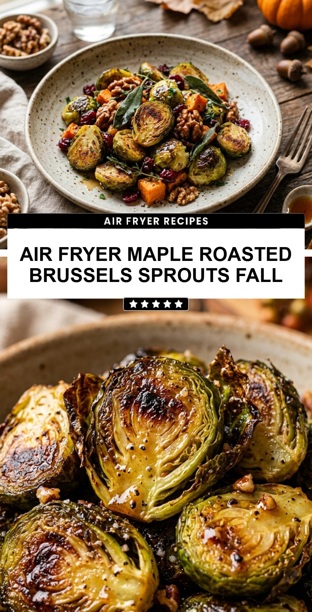

Air Fryer Maple Roasted Brussels Sprouts Fall
October 19, 2026

As the leaves begin to change and the air turns crisp, there is nothing quite like the comforting flavors of fall. One of the best ways to celebrate the season is with a side dish that perfectly balances savory and sweet notes. These Air Fryer Maple Roasted Brussels Sprouts are the ultimate autumn addition to your dinner table. They offer a satisfying crunch that only an air fryer can achieve, paired with the deep, rich sweetness of pure maple syrup.
Recipe Information
Prep Time: 10 minutes
Cook Time: 15 minutes
Total Time: 25 minutes
Servings: 4
Difficulty Level: Easy
Nutrition Information
Calories per serving: 115 kcal
Protein: 3g
Carbohydrates: 16g
Fat: 5g
Fiber: 4g
Sugar: 9g
Sodium: 160mg